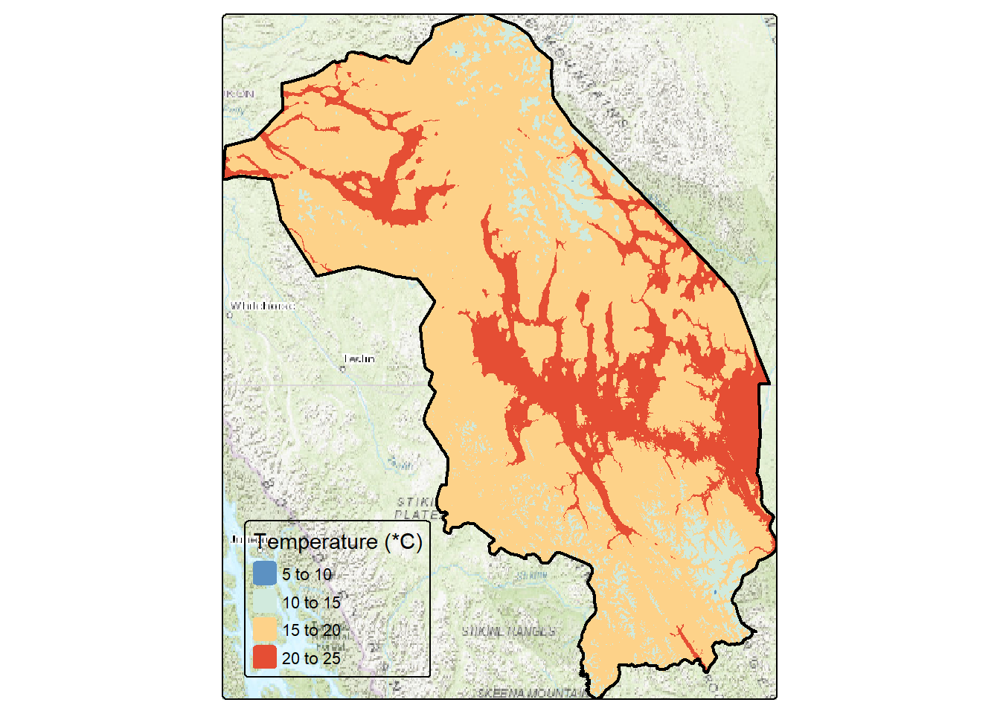
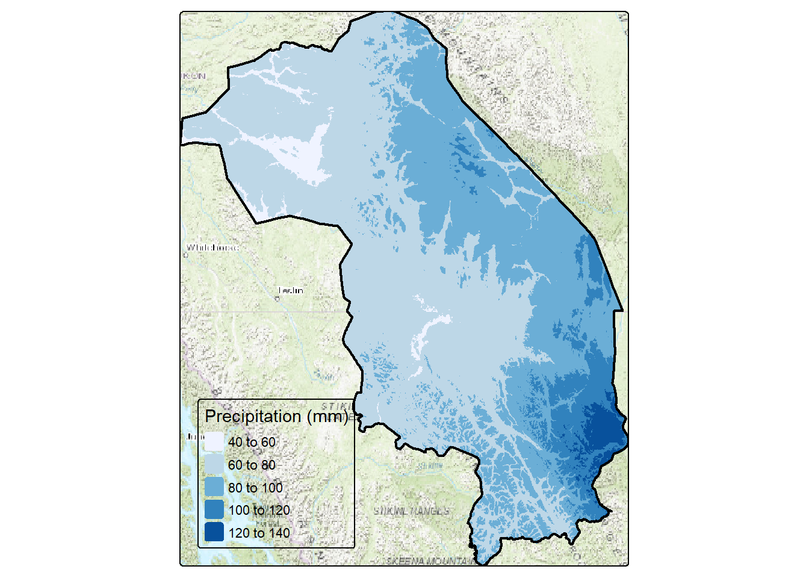
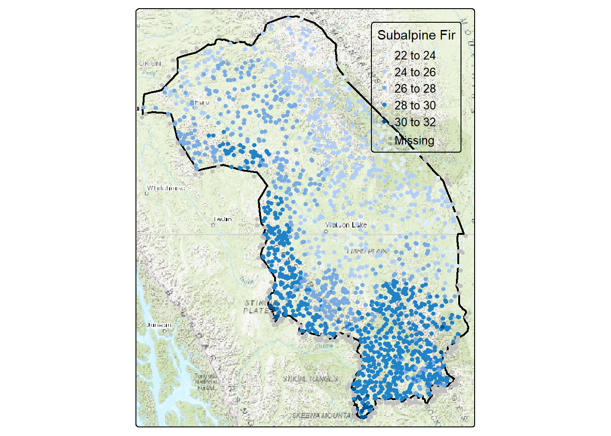
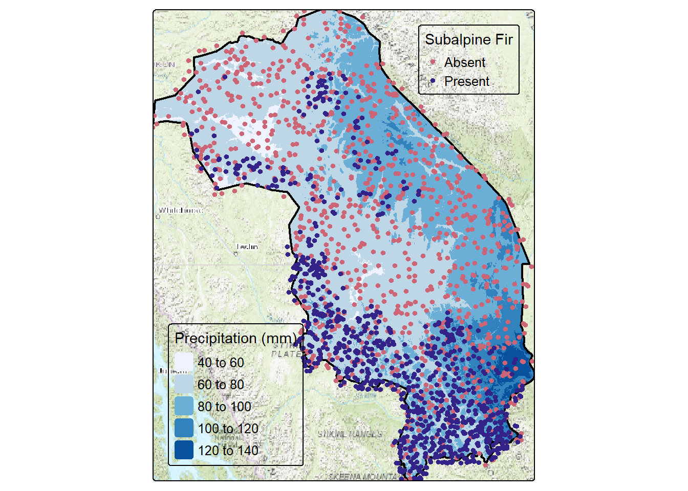

library(sf)
library(tmap)
library(dplyr)
library(terra)
library(tmaptools)
library(geodata)
set.seed(123)Subalpine fir - extracting covariates
Pierre Vernier (2024-02-26)
Introduction
Objectives:
- Download bioclimate data (tiles) from Worldclim
- Clip the tiles to KDTT study area
- Extract bioclimate data using random subalpine fir location
Methods
Load required libraries
View study area
bnd <- st_read('data/kdtt.gpkg', 'bnd', quiet=TRUE)
tm_basemap(server = c("Esri.WorldTopoMap")) +
tm_shape(bnd) + tm_polygons(color='black', fill_alpha=0, lwd=2)
Download and prepare bioclimate data
We will use the worldclim_tile function in the geodata package to download a standard set of 19 bioclimatic variables from the Worlclim website (https://worldclim.org/data/worldclim21.html). We will select the highest resolution data available (~1 km2) representing an average for the years 1970-2000 (climate normal). AdaptWest (https://adaptwest.databasin.org/pages/adaptwest-climatena/) also provides a similar set of datasets, the disadvantage being that they have to be downloaded manually.
The KDTT study area requires that I download two tiles of data.
bnd4326 <- st_transform(bnd, 4326)
# Uncomment next 2 lines to download climate data from Worlclim
#d1 <- worldclim_tile(var='bio', lon=-128, lat=59, path='tmp')
#d2 <- worldclim_tile(var='bio', lon=-128, lat=61, path='tmp')Read and rename raster layers
Once downloaded, we rename the 19 rasters to bio1-bio19.
t1 <- rast('data_raw/tile_14_wc2.1_30s_bio.tif')
names(t1) [1] "tile_14_wc2.1_30s_bio_1" "tile_14_wc2.1_30s_bio_2"
[3] "tile_14_wc2.1_30s_bio_3" "tile_14_wc2.1_30s_bio_4"
[5] "tile_14_wc2.1_30s_bio_5" "tile_14_wc2.1_30s_bio_6"
[7] "tile_14_wc2.1_30s_bio_7" "tile_14_wc2.1_30s_bio_8"
[9] "tile_14_wc2.1_30s_bio_9" "tile_14_wc2.1_30s_bio_10"
[11] "tile_14_wc2.1_30s_bio_11" "tile_14_wc2.1_30s_bio_12"
[13] "tile_14_wc2.1_30s_bio_13" "tile_14_wc2.1_30s_bio_14"
[15] "tile_14_wc2.1_30s_bio_15" "tile_14_wc2.1_30s_bio_16"
[17] "tile_14_wc2.1_30s_bio_17" "tile_14_wc2.1_30s_bio_18"
[19] "tile_14_wc2.1_30s_bio_19"names(t1) <- paste0("bio", c(1, 10:19, 2:9))
names(t1) [1] "bio1" "bio10" "bio11" "bio12" "bio13" "bio14" "bio15" "bio16" "bio17"
[10] "bio18" "bio19" "bio2" "bio3" "bio4" "bio5" "bio6" "bio7" "bio8"
[19] "bio9" t2 <- rast('data_raw/tile_2_wc2.1_30s_bio.tif')
names(t2) <- paste0("bio", c(1, 10:19, 2:9))
names(t2) [1] "bio1" "bio10" "bio11" "bio12" "bio13" "bio14" "bio15" "bio16" "bio17"
[10] "bio18" "bio19" "bio2" "bio3" "bio4" "bio5" "bio6" "bio7" "bio8"
[19] "bio9" Clip covariates to study area
Now we can use the KDTT study area boundary to clip the bioclimate rasters and then merge them.
t1_crop <- crop(t1, vect(bnd4326))
t1_msk <- mask(t1_crop, vect(bnd4326))
t2_crop <- crop(t2, vect(bnd4326))
t2_msk <- mask(t2_crop, vect(bnd4326))
tt <- merge(t1_msk, t2_msk)
ttclass : SpatRaster
dimensions : 848, 1384, 19 (nrow, ncol, nlyr)
resolution : 0.008333333, 0.008333333 (x, y)
extent : -135.175, -123.6417, 56.75, 63.81667 (xmin, xmax, ymin, ymax)
coord. ref. : lon/lat WGS 84 (EPSG:4326)
source(s) : memory
varname : tile_14_wc2.1_30s_bio
names : bio1, bio10, bio11, bio12, bio13, bio14, ...
min values : -11.83333, 1.283333, -24.8, 254, 51, 4, ...
max values : 0.81250, 15.533333, -12.4, 829, 133, 36, ... #writeRaster(tt, 'data/bio.tif', overwrite=TRUE)View some of the merged raster layers
We will take a look at two of the layers, temperature and precipitation.
Temperature
pal <- get_brewer_pal("-RdYlBu", n=5, plot=FALSE)
tm_basemap(server = c("Esri.WorldTopoMap")) +
tm_shape(tt[["bio5"]]) + tm_raster(col.scale=tm_scale_intervals(n=5, style="pretty", values=pal),
col.legend = tm_legend(title = "Temperature (*C)", position = tm_pos_in("left", "bottom")),
col_alpha=1) +
tm_shape(bnd4326) + tm_polygons(fill_alpha=0, col="black", lwd=2)
Precipitation
tm_basemap(server = c("Esri.WorldTopoMap")) +
tm_shape(tt[["bio13"]]) + tm_raster(col.scale=tm_scale_intervals(n=5, style="pretty", values="Blues"),
col.legend = tm_legend(title = "Precipitation (mm)", position = tm_pos_in("left", "bottom")),
col_alpha=1) +
tm_shape(bnd4326) + tm_polygons(fill_alpha=0, col="black", lwd=2)
Extract bioclimate data using points
We can now extract the bioclimate data using our random presence-absence points for subalpine fir. We first read the subalpine fir random presence/absence file that we created last time. We use that file to extract the 19 bioclimate variable values at each point. Finally, we merge them back to the points file.
abla_pts <- st_read('data/kdtt.gpkg', 'abla') %>%
st_transform(4326)Reading layer `abla' from data source
`C:\Users\PIVER37\Documents\github\beaconsproject\coding\tutorials\data\kdtt.gpkg'
using driver `GPKG'
Simple feature collection with 1965 features and 2 fields
Geometry type: POINT
Dimension: XY
Bounding box: xmin: 359535 ymin: 260505 xmax: 1017135 ymax: 1037325
Projected CRS: NAD83 / Yukon Albersabla_bio <- extract(tt, vect(abla_pts))
abla_pts_bio <- bind_cols(abla_pts, abla_bio)
abla_pts_bioSimple feature collection with 1965 features and 22 fields
Geometry type: POINT
Dimension: XY
Bounding box: xmin: -135.1869 ymin: 56.71846 xmax: -123.605 ymax: 63.79814
Geodetic CRS: WGS 84
First 10 features:
Occurrence PresenceAbsence ID bio1 bio10 bio11 bio12 bio13
1 0 Absent 1 -1.9625000 13.833333 -19.31667 497 95
2 0 Absent 2 -2.3541667 10.900000 -16.20000 529 87
3 0 Absent 3 -2.2750001 12.950000 -19.73333 453 67
4 0 Absent 4 -5.7375002 8.599999 -18.68333 368 69
5 0 Absent 5 -0.4041666 12.183333 -14.05000 490 67
6 0 Absent 6 -3.0874999 13.316667 -21.28333 481 78
7 0 Absent 7 -4.3833332 7.150000 -15.13333 673 89
8 0 Absent 8 -7.5625000 7.616667 -21.06667 601 95
9 0 Absent 9 -3.8625000 11.683333 -20.98333 499 73
10 0 Absent 10 -3.8333333 11.066667 -19.33333 291 56
bio14 bio15 bio16 bio17 bio18 bio19 bio2 bio3 bio4 bio5
1 18 59.72225 236 58 236 65 11.37500 23.84696 1361.7103 21.4
2 21 44.35683 219 70 219 100 11.67500 27.79762 1110.5802 18.4
3 18 37.28563 173 64 173 92 12.03333 24.65847 1338.5551 20.9
4 14 54.75156 168 47 168 55 11.47500 26.87354 1132.0378 16.3
5 13 36.72025 174 60 174 123 11.35833 27.70325 1067.7471 19.6
6 21 42.57211 198 69 198 86 12.25833 23.89539 1419.1597 21.7
7 21 32.92192 236 98 236 151 10.55000 28.98352 917.8218 14.3
8 29 43.76863 251 91 251 98 10.77500 24.54442 1199.4926 15.3
9 20 39.83319 194 68 194 91 12.02500 24.74280 1337.6661 19.5
10 9 57.27034 135 32 135 44 13.36667 28.25934 1251.1655 19.7
bio6 bio7 bio8 bio9 geom
1 -26.3 47.7 13.833333 -9.216666 POINT (-124.4427 60.07953)
2 -23.6 42.0 10.900000 -8.283334 POINT (-126.4029 59.11991)
3 -27.9 48.8 12.950000 -8.433333 POINT (-127.2625 59.829)
4 -26.4 42.7 8.599999 -12.183333 POINT (-132.6516 62.73448)
5 -21.4 41.0 12.183333 -5.616667 POINT (-126.226 57.62838)
6 -29.6 51.3 13.316667 -9.750000 POINT (-126.0417 60.4285)
7 -22.1 36.4 7.150000 -9.800000 POINT (-126.8268 57.8491)
8 -28.6 43.9 7.616667 -14.716667 POINT (-127.1326 62.11206)
9 -29.1 48.6 11.683333 -10.333334 POINT (-128.3891 60.67085)
10 -27.6 47.3 11.066667 -10.183333 POINT (-132.2993 61.79676)Map bioclimate values at points
tm_basemap(server = c("Esri.WorldTopoMap")) +
tm_shape(bnd4326) + tm_polygons(fill_alpha=0, col="black", lwd=2) +
tm_shape(abla_pts_bio) + tm_dots(fill='bio3', size=0.3,
fill.legend = tm_legend(title = "Subalpine Fir", position = tm_pos_in("right", "top"))) +
tm_layout(legend.text.size = 0.8)
Map bioclimate raster with presence/absence
tm_basemap(server = c("Esri.WorldTopoMap")) +
tm_shape(tt[["bio13"]]) + tm_raster(col.scale=tm_scale_intervals(n=5, style="pretty", values="Blues"),
col.legend = tm_legend(title = "Precipitation (mm)", position = tm_pos_in("left", "bottom")),
col_alpha=1) +
tm_shape(bnd4326) + tm_polygons(fill_alpha=0, col="black", lwd=2) +
tm_shape(abla_pts_bio) + tm_dots(fill='PresenceAbsence', size=0.3,
fill.legend = tm_legend(title = "Subalpine Fir", position = tm_pos_in("right", "top"))) +
tm_layout(legend.text.size = 0.8)
Split sample into training and testing
Prior to developing a model, we split the data into a training (70%) and testing set (30%). Other splits or even multiple splits can be used.
#set.seed(123)
abla_train <- abla_bio %>%
sample_frac(size = 0.7)
table(abla_train$PresenceAbsence)< table of extent 0 >abla_val <- abla_bio %>%
anti_join(abla_train, by = "ID")
table(abla_val$PresenceAbsence)< table of extent 0 >